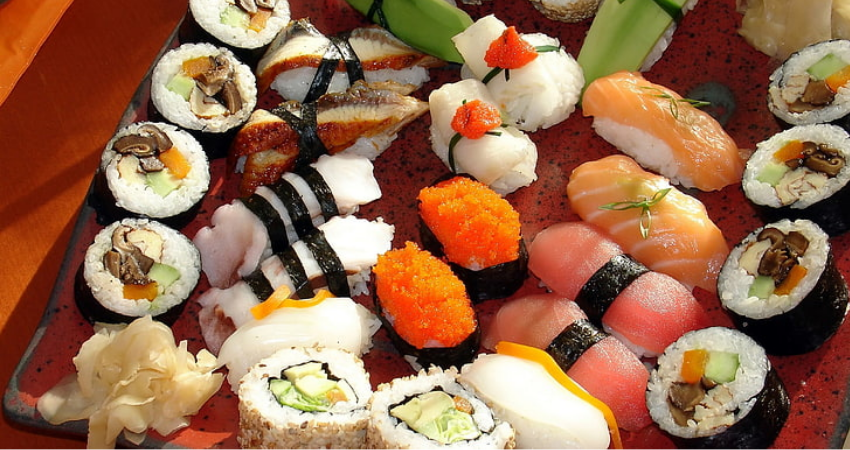
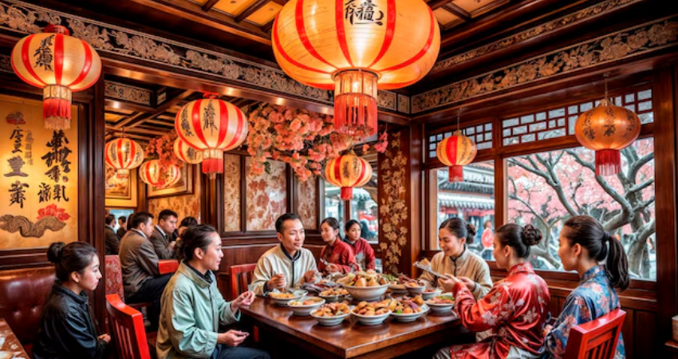
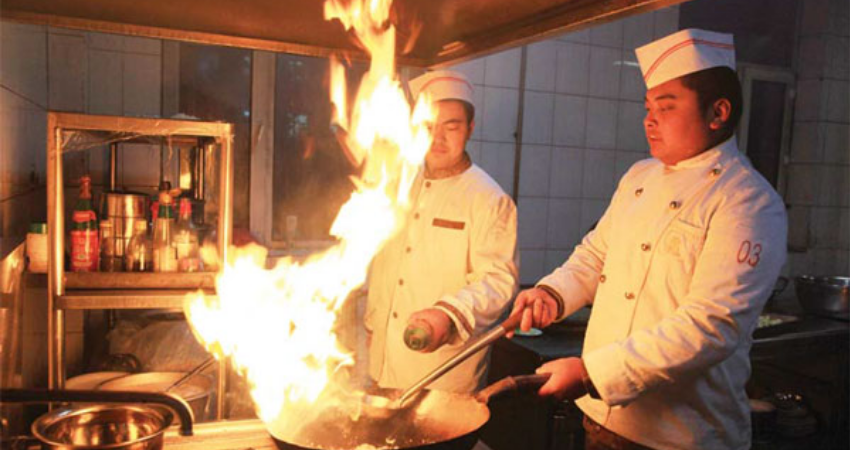

Food Menu
Food Menu
Most Popular Items

Peking Duck (China) $70
A signature Beijing dish featuring crispy, golden-brown duck skin and succulent meat, served with thin pancakes, hoisin sauce, and fresh scallions for a perfect balance of flavor and texture.
Mapo Tofu (China) $29
Silky tofu simmered in a fiery Sichuan peppercorn and minced pork sauce, delivering a bold and numbing spice that’s perfect over steamed rice.
Three Cup Chicken (Taiwan) $40
A fragrant stir-fry of chicken cooked with equal parts soy sauce, sesame oil, and rice wine, infused with fresh basil, garlic, and ginger for a deep, aromatic flavor.
Lu Rou Fan (Taiwan) $45
A classic Taiwanese braised pork rice dish featuring slow-cooked, caramelized minced pork served over steamed rice with a marinated egg and pickled mustard greens.
Beef Bulgogi (Korea) $60
Tender slices of marinated beef grilled to perfection with a sweet and savory soy-garlic sauce, served with sesame seeds and scallions for an irresistible umami kick.
Japchae (Korea) $30
Stir-fried glass noodles tossed with beef, vibrant vegetables, and a slightly sweet sesame-soy sauce, offering a delicious mix of chewy, savory, and sweet textures.
Tonkotsu Ramen (Japan) $55
A rich, creamy pork bone broth served with springy noodles, chashu pork, soft-boiled egg, bamboo shoots, and green onions, creating the ultimate comfort bowl.
Katsu Curry (Japan) $55
A crispy breaded pork cutlet served with a hearty Japanese curry sauce and fluffy rice, bringing warmth and comfort in every bite.
Xiao Long Bao (China) $30
Juicy, delicate soup dumplings filled with pork and rich broth, served hot with black vinegar and ginger for the perfect bite.
Kimchi (Korea) $25
A staple Korean side dish made of fermented napa cabbage and radish, seasoned with chili, garlic, and fish sauce, delivering a punch of spice and tanginess.
Gyoza (Japan) $30
Crispy pan-fried dumplings filled with a savory mix of pork, cabbage, and garlic, served with a soy-vinegar dipping sauce for a perfect umami boost.
Scallion Pancakes (China) $15
Crispy, flaky, and savory pancakes layered with fragrant scallions, served hot with a soy-based dipping sauce.
Onigiri (Japan) $25
Handcrafted rice balls wrapped in nori and filled with ingredients like grilled salmon, tuna mayo, or pickled plum for a satisfying snack.
Popcorn Chicken (Taiwan) $35
Crispy, bite-sized chicken pieces seasoned with five-spice powder and fried to perfection, served with fresh basil for an extra crunch.
Tteokbokki (Korea) $30
Chewy rice cakes simmered in a bold and spicy gochujang sauce, often topped with fish cakes, boiled eggs, and sesame seeds.
Century Egg & Tofu (China) $15
Silky chilled tofu topped with century egg, soy sauce, sesame oil, and bonito flakes for a unique and umami-rich appetizer.
Bubble Tea (Taiwan) $15
The iconic Taiwanese milk tea with chewy tapioca pearls, available in flavors like classic black tea, taro, or matcha.
Sakura Iced Tea (Japan) $15
A delicate and floral iced tea infused with cherry blossoms, offering a refreshing and slightly sweet aroma.
Sikhye (Korea) $15
A traditional sweet rice punch made from fermented barley and rice, served chilled for a subtly sweet and refreshing finish.
Soybean Milk (China) $15
A smooth, creamy, and mildly sweet soy drink enjoyed hot or cold, perfect alongside breakfast or dim sum.
Matcha Latte (Japan) $15
A rich and creamy blend of finely ground green tea and steamed milk, providing a smooth and slightly earthy flavor.
Winter Melon Tea (Taiwan) $15
A naturally sweetened herbal tea brewed with winter melon, offering a light, honey-like taste that’s both cooling and soothing.
Makgeolli (Korea) $15
A lightly sparkling, milky rice wine with a subtle sweetness, often enjoyed chilled with Korean barbecue.
Chrysanthemum Tea (China) $15
A floral and fragrant herbal tea brewed from dried chrysanthemum flowers, known for its soothing and refreshing qualities.Our Inspiration
Why Oriental Foods?
At Oriental Cuisines Co., our passion for Asian cuisine goes beyond just serving food—it’s about sharing a rich culinary heritage that has been perfected over centuries. The diverse flavors of the East tell stories of tradition, artistry, and culture, each dish crafted with techniques passed down through generations. From the sizzling woks of China to the delicate precision of Japanese sushi, the bold spices of Korea, and the comforting aromas of Taiwanese street food, our mission is to bring the authentic essence of Oriental cuisine to every plate we serve.
What makes Oriental cuisine so captivating is its balance of flavors and textures. Each bite is a perfect harmony of sweet, savory, spicy, and umami, carefully layered to create a unique and memorable dining experience. The silkiness of mapo tofu, the crispy perfection of Peking duck, the rich depth of Japanese ramen broth, and the satisfying chew of tteokbokki—these are just a few of the dishes that define the extraordinary world of Asian flavors. At Oriental Cuisines Co., we celebrate this diversity by ensuring that every dish we serve honors its roots while delighting the modern palate.

Beyond taste, Oriental cuisine embodies culture and tradition. Every meal is a reflection of history and community, from the elaborate feasts of imperial China to the vibrant street food of Taiwan, the family-style dining of Korea, and the delicate craftsmanship of Japanese kaiseki. Food is more than sustenance; it is an experience that brings people together, a celebration of life’s special moments. At our core, we strive to create not just meals, but lasting memories—whether it’s a simple gathering or an extravagant banquet, our food carries the spirit of the East.

Our dedication to Oriental cuisine also stems from our respect for its culinary philosophy. Asian cooking is rooted in balance and wellness, using fresh, natural ingredients and time-honored techniques to nourish both body and soul. From the medicinal benefits of herbal broths to the precision of umami-rich fermentation, every dish tells a story of mindful preparation and deep appreciation for nature’s bounty. At Oriental Cuisines Co., we take pride in maintaining these principles, ensuring that our food is as wholesome as it is delicious.

Ultimately, we serve Oriental cuisine because it is an experience like no other—one that captivates the senses, connects people across cultures, and honors the artistry of generations before us. Our passion drives us to perfect every recipe, refine every flavor, and deliver not just food, but a journey through the heart of Asia. Whether you're discovering these flavors for the first time or rekindling fond memories, we invite you to indulge in the richness of the East and let every bite transport you to a world of taste, tradition, and timeless elegance.